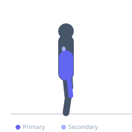

Exercise guide / Captain's Chair Knee Raise
Captain's Chair Knee Raise
The captain's chair knee raise is performed on a vertical knee-raise station where the athlete supports their body weight on forearm pads and raises the knees toward the chest. The bent-knee position reduces the lever arm compared to a straight-leg raise, making this more accessible and placing greater relative demand on the rectus abdominis through hip flexion rather than purely the hip flexors. It is a highly effective mid-section exercise that also challenges the shoulder girdle isometrically as it supports the bodyweight.
Primary muscles
rectus abdominis
iliacus
psoas major
Secondary muscles
internal oblique
triceps lateral head
Stabilizers
deltoid anterior
transverse abdominis
Equipment
Dip Bars / Dip Station


Starting position
- Mount the captain's chair station by gripping the handles and resting forearms on the pads. The back rests against the back pad. Legs hang straight below.
Setup
- Adjust the pad height if the station allows, so the forearms rest comfortably with shoulders away from the ears.
Steps
- Step 1: Begin hanging with legs straight. Engage the core before initiating the movement.
- Step 2: Bend the knees and draw them upward toward the chest, curling the pelvis slightly forward (posterior pelvic tilt) at the top.
- Step 3: Hold the top position for 1 second, squeezing the abs.
- Step 4: Slowly lower the knees back to the hanging position, resisting gravity throughout.
- Step 5: Repeat without swinging.
Coaching cues
- Curl the pelvis under at the top
- No swinging — control the descent
Breathing
- Exhale as the knees rise. Inhale as they lower.
Range of motion
- Knees travel from straight hanging to above hip level — ideally with the thighs at or above horizontal.
Tempo
- 2-1-2-0. Controlled throughout. No swinging.
Common mistakes
- Swinging the legs up with momentum rather than using slow, controlled ab contraction
- Not curling the pelvis at the top, which limits rectus abdominis involvement
Safety
- Avoid if shoulder or elbow pain is present — the forearm support places demand on the shoulder girdle
Training
- hypertrophy: 12–20 reps
- endurance: 20–30 reps
- hypertrophy: 3–4 sets
- Rest: {'hypertrophy': 60}